리눅스마스터-1급 (2016-09-10 기출문제)
1과목: 리눅스 실무의 이해
1. 다음 설명으로 알맞은 것은?
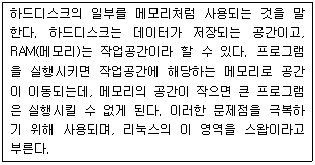
- 계층적인 파일 구조
- 장치의 파일화
- 가상메모리
- 동적라이브러리
(정답률: 80%)

2. 다음 설명으로 알맞은 것은?
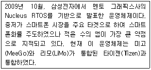
- 바다(Bada) OS
- 마에모(Maemo)
- 모블린(Moblin)
- 안드로이드(Android)
(정답률: 71%)
3. 다음 설명으로 알맞은 것은?
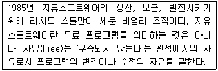
- BSD
- GPL
- GNU
- FSF
(정답률: 57%)
4. 다음 설명으로 알맞은 것은?
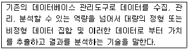
- 사물인터넷(IoT)
- 클라우드(Cloud)
- 임베디드 시스템(Embedded System)
- 빅데이터(Big Data)
(정답률: 78%)
5. 다음 중 데비안 계열의 리눅스 배포판으로 틀린 것은?
- Ubuntu
- Knoppix
- Corel
- Fedora
(정답률: 62%)
6. 4개의 하드디스크를 이용하여 아래의 상황에 맞게 디스크를 구성하려고 한다. 다음 ( 괄호 ) 안에 들어갈 내용으로 알맞은 것은?
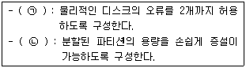
- ㉠ RAID-6 ㉡ LVM
- ㉠ RAID-5 ㉡ RAID-6
- ㉠ LVM ㉡ RAID-5
- ㉠ LVM ㉡ RAID-6
(정답률: 68%)
7. 다음에서 설명하는 디렉터리로 알맞은 것은?
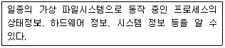
- /etc
- /boot
- /tmp
- /proc
(정답률: 72%)
8. 다음 설명과 관련 있는 파일로 알맞은 것은?
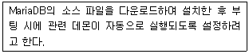
- /etc/inittab
- /etc/rc.d/rc.local
- /etc/init/rc.conf
- /etc/init/rcS.conf
(정답률: 51%)
9. 다음 ( 괄호 ) 안에 들어갈 내용으로 알맞은 것은?
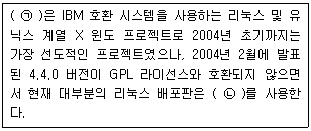
- ㉠ X.org ㉡ XFree86
- ㉠ XFree86 ㉡ X.org
- ㉠ KDE ㉡ GNOME
- ㉠ GNOME ㉡ KDE
(정답률: 60%)
10. 다음 설명에 해당하는 명령으로 알맞은 것은?
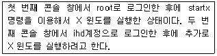
- startx -- --depth 1
- startx -- --depth 2
- startx -- :1
- startx -- :2
(정답률: 45%)
11. backup.sh라는 스크립트를 실행할 때 발생하는 오류 메시지를 화면에 출력하지 않으려고 한다. 다음 ( 괄호 ) 안에 들어갈 내용으로 알맞은 것은?
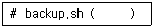
- 1</dev/null
- 2</dev/null
- 1>/dev/null
- 2>/dev/null
(정답률: 57%)
12. 다음 ( 괄호 ) 안에 들어갈 내용으로 알맞은 것은?
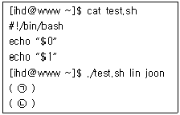
- ㉠ lin ㉡ joon
- ㉠ joon ㉡ lin
- ㉠ ./test.sh ㉡ lin
- ㉠ ./test.sh ㉡ joon
(정답률: 56%)
13. 다음 포어그라운드 프로세스를 백그라운드 프로세스로 전환할때 사용하는 인터럽트키조합으로 알맞은것은?
- [Ctrl]+[z]
- [Ctrl]+[c]
- [Ctrl]+[d]
- [Ctrl]+[\]
(정답률: 68%)
14. 다음 중 SIGKILL 시그널 번호로 알맞은 것은?
- 1
- 5
- 9
- 15
(정답률: 73%)
15. 시스템 재부팅 시에도 텔넷 서비스가 사용가능하도록 설정하려고 한다. 다음 ( 괄호 ) 안에 들어갈 내용으로 알맞은 것은?
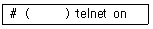
- service
- init
- chkconfig
- ntsysv
(정답률: 53%)
16. 다음 OSI 7 계층 중 응용 계층에 해당하는 프로토콜과 포트번호 조합으로 알맞은 것은?
- Telnet : 20
- SSH : 22
- POP3 : 143
- SSL : 443
(정답률: 59%)
17. 다음 중 ( 괄호 ) 안에 들어갈 내용으로 알맞은 것은?
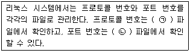
- ㉠ : /etc/protocol ㉡ : /etc/service
- ㉠ : /etc/service ㉡ : /etc/protocol
- ㉠ : /etc/protocols ㉡ : /etc/services
- ㉠ : /etc/services ㉡ : /etc/protocols
(정답률: 61%)
18. 다음 조건일 때 인터넷에 연결 가능한 호스트 개수로 알맞은 것은?
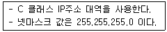
- 253
- 254
- 255
- 256
(정답률: 63%)
19. 다음에서 설명하는 파일로 알맞은 것은?
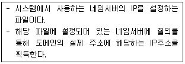
- /etc/resolv.conf
- /etc/sysconfig/network
- /etc/hosts
- /etc/sysconfig/network-scripts
(정답률: 61%)
20. 다음 중 netstat의 state 결과 값에 대한 설명으로 틀린 것은?
- LISTEN : 서버로 들어오는 패킷을 위해 소켓을 열고 기다리는 상태
- CLOSE-WAIT : 원격 호스트는 종료된 상태이고 소켓을 종료하기 위해 기다리는 상태
- ESTABLISHED : 3way-handshaking이 완료 후 서버와 클라이언트가 서로 연결된 상태
- TIME-WAIT : 원격 호스트가 종료되고 소켓도 닫힌 상태에서 마지막 ACK 패킷을 기다리는 상태
(정답률: 59%)
2과목: 리눅스 시스템 관리
21. 다음 중 root 계정 관리 정책에 대한 설명으로 틀린 것은?
- 일반 사용자에게 특정 명령어 권한만 할당해 줄 경우에는 su 보다는 sudo를 이용하도록 한다.
- 환경 변수인 TMOUT를 설정하여 무의미하게 장시간 로그인하는 것을 막는다.
- PAM를 이용하여 root 계정으로 직접 로그인하는 것을 막고, 필요하면 su 명령의 사용을 유도한다.
- 일반 사용자 계정의 UID를 0으로 설정하여 보안을 강화한다.
(정답률: 70%)
22. 다음 ( 괄호 ) 안에 들어갈 알맞은 명령어는?
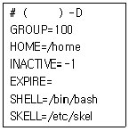
- useradd
- usermod
- groupadd
- groupmod
(정답률: 49%)
23. 다음 명령에 대한 설명으로 틀린 것은?
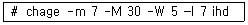
- 패스워드 만기일 이후 7일이 지나도 변경하지 않으면 패스워드에 잠금을 설정한다.
- 패스워드 만기일의 5일전부터 경고 메세지로 알려준다.
- 패스워드를 변경할 수 없는 일수는 5일이다.
- 패스워드의 최대 사용 가능한 날은 30일이다.
(정답률: 65%)
24. 다음 조건과 같을 경우 ( 괄호 ) 안에 들어갈 명령어로 알맞은 것은?
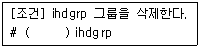
- usermod
- groupmod
- userdel
- groupdel
(정답률: 71%)
25. 다음 중 명령어와 관련된 설명으로 틀린 것은?
- w : 사용자의 암호 설정 유무를 알려 주는 명령
- users : 시스템에 로그인되어 있는 사용자의 아이디를 출력해 주는 명령
- who : 시스템에 로그인되어 있는 사용자를 출력해 주는 명령
- whoami : 실질적으로 사용 중인 권한자를 출력해 주는 명령
(정답률: 64%)
26. 다음 중 passwd 명령어에 대한 설명으로 알맞은 것은?
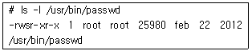
- 일반사용자는 passwd 명령어를 실행할 수 없다.
- Set-UID가 설정된 실행 파일이다.
- 스티키 비트(Sticky-Bit)가 설정된 파일이다.
- Set-GID가 설정된 실행 파일이다.
(정답률: 56%)
27. 다음 ( 괄호 ) 안에 들어갈 명령어 옵션으로 알맞은 것은? (단, /home/ihd 디렉터리는 사용자 홈디렉터리이다.)
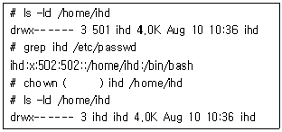
- -A
- -C
- -T
- -R
(정답률: 47%)
28. 다음 중 파티션 테이블 정보를 확인할 때 사용하는 명령어 형식으로 알맞은 것은?
- # fdisk -l /dev/sda
- # fdisk -s /dev/sda
- # fdisk /dev/sda
- # fdisk –v /dev/sda
(정답률: 57%)
29. 다음은 CD 이미지 파일을 마운트 하는 과정이다. ( 괄호 ) 안에 들어갈 명령어의 옵션으로 알맞은 것은?
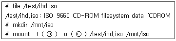
- ㉠ ext4 ㉡ ro,loop
- ㉠ ext4 ㉡ rw,noatime
- ㉠ iso9660 ㉡ ro,loop
- ㉠ iso9660 ㉡ rw,noatime
(정답률: 55%)
30. 다음 명령에 대한 설명으로 알맞은 것은?
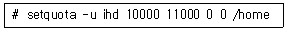
- 쿼터 설정 중 inode에 대한 hard-limit은 10000, soft-limit은 11000 이다.
- 쿼터 설정 중 inode에 대한 soft-limit은 10000, hard-limit은 11000 이다.
- 쿼터 설정 중 block에 대한 hard-limit은 10000, soft-limit은 11000 이다.
- 쿼터 설정 중 block에 대한 soft-limit은 10000, hard-limit은 11000 이다.
(정답률: 43%)
31. 다음 중 /proc 관련 파일에 대한 설명으로 틀린 것은?
- /proc/cpuinfo : CPU에 관한 정보
- /proc/mdstat : LVM 사용에 관련 정보를 기록
- /proc/partitions : 현재 활성화된 파티션 정보를 기록
- /proc/swaps : 스왑 파티션 관련 정보 기록
(정답률: 64%)
32. 다음 결과에 대한 설명으로 틀린 것은?
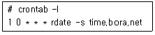
- 매일 같이 0시 1분에 수행된다.
- 주말은 스케줄링에서 제외된다.
- time.bora.net 서버 시간과 정기적으로 동기화된다.
- root 사용자의 스케줄링이어야 한다.
(정답률: 63%)
33. 다음프로세스 관련명령어에대한 설명으로틀린것은?
- top : 현재 동작중인 프로세스의 정보를 실시간으로 확인 가능
- kill : 현재 동작중인 프로세스를 종료할 때 많이 사용
- nice : 실행 중인 프로세스의 PRI값을 조정할 때 사용
- jobs : 백그라운드로 실행 중인 프로세스의 목록 출력
(정답률: 58%)
34. 다음 중 프로세스의 상태를 트리(Tree) 구조로 출력해 주는 명령으로 알맞은 것은?
- top
- ps
- pstree
- ptree
(정답률: 63%)
35. 다음 명령에 대한 설명으로 틀린 것은?
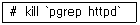
- 명령어가 정상 동작하지 않는다.
- 여러 개의 httpd 데몬을 모두 종료한다.
- 시그널(Signal)은 15번을 사용하였다.
- killall 명령어와 비슷한 효과를 나타낸다.
(정답률: 53%)
36. 다음 중 RPM 패키지 형식에 대한 설명으로 틀린 것은?
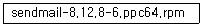
- 패키지 이름은 sendmail이다.
- 패키지 릴리즈는 8.12.8이고 패키지 버전은 6이다.
- 패키지 아키텍쳐는 ppc64이다.
- PowerPC 64bit용 패키지이다.
(정답률: 53%)
37. 다음 중 dpkg 명령어 옵션과 설명이 틀린 것은?
- dpkg -i <pkg> : 패키지 설치시 사용
- dpkg -l : 설치된 패키지의 목록 확인
- dpkg -L <pkg> : 패키지에 의해 설치된 파일 목록을 확인
- dpkg -s <pkg> : 패키지 삭제시 사용
(정답률: 60%)
38. 다음 설명으로 알맞은 것은?
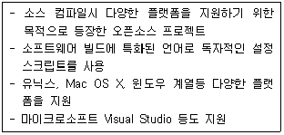
- make
- cmake
- Makefile
- configure
(정답률: 53%)
39. 다음 중 소스 파일로 프로그램을 설치하는 단계로 올바른 것은?
- configure → make → make install
- make → configure → make install
- configure → make install → make
- make → make install → configure
(정답률: 58%)
40. 다음 중 압축된 파일과 압축해제 명령의 조합으로 틀린 것은?
- file.xz - unxz
- file.bz2 - gzcat
- file.zip - unzip
- file.gz - gunzip
(정답률: 58%)
41. 리눅스 시스템의 커널 버전이 다음과 같을 때 커널 모듈이 위치하는 디렉터리로 알맞은 것은?
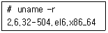
- /lib/kernel/modules/2.6.32-504.el6.x86_64
- /lib/kernel/2.6.32-504.el6.x86_64/modules
- /lib/modules/kernel/2.6.32-504.el6.x86_64
- /lib/modules/2.6.32-504.el6.x86_64/kernel
(정답률: 39%)
42. 모듈 제거 시에 사용하지 않는 관련 모듈도 함께 제거하려고 한다. 다음 ( 괄호 ) 안에 들어갈 내용으로 알맞은 것은?
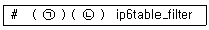
- ㉠ modprobe ㉡ -r
- ㉠ modprobe ㉡ -d
- ㉠ rmmod ㉡ -r
- ㉠ rmmod ㉡ -d
(정답률: 41%)
43. 다음과같은 형식의내용이기록된 파일로알맞은것은?
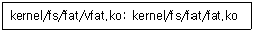
- modules.conf
- modprobe.conf
- modules.dep
- modprobe.dep
(정답률: 37%)
44. 다음에서 설명하는 커널 컴파일 도구로 알맞은 것은?
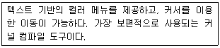
- make config
- make gconfig
- make xconfig
- make menuconfig
(정답률: 50%)
45. 다음 중 커널 컴파일의 순서로 가장 알맞은 것은?
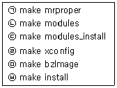
- ㉠ → ㉥ → ㉡ → ㉢ → ㉤ → ㉣
- ㉠ → ㉣ → ㉤ → ㉡ → ㉢ → ㉥
- ㉣ → ㉡ → ㉢ → ㉤ → ㉥ → ㉠
- ㉣ → ㉠ → ㉡ → ㉢ → ㉤ → ㉥
(정답률: 51%)
46. 다음 중 활성화된 파티션 영역을 확인하는 명령으로 가장 알맞은 것은?
- cat /etc/fstab
- cat /proc/filesystems
- cat /proc/partitions
- cat /etc/filesystems
(정답률: 58%)
47. 다음 그림과 관련된 도구로 알맞은 것은?
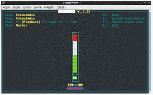
- alsactl
- alsamixer
- cdparanoia
- asound
(정답률: 49%)
48. 다음 X 윈도 기반의 스캐너 관련 도구로 알맞은 것은?
- sane
- xsane
- xscan
- scanimage
(정답률: 46%)
49. 다음 중 대화형으로 프린터를 제어할 때 사용하는 명령으로 알맞은 것은?
- lpc
- lpr
- lpq
- lpi
(정답률: 43%)
50. 다음 중 프린터를 HTTP 기반으로 접근할 때 가장 관련 있는 프로토콜로 알맞은 것은?
- IPP
- IPX
- LPD
- IGMP
(정답률: 42%)
51. 다음 중 rsyslog의 데몬과 설정 파일로 알맞은 것은?
- 데몬 : /sbin/rsyslogd, 설정파일: /etc/rsyslog.conf
- 데몬 : /sbin/rsyslogd, 설정파일: /etc/rsyslogd.conf
- 데몬 : /sbin/rsyslog, 설정파일: /etc/rsyslog.conf
- 데몬 : /sbin/rsyslog, 설정파일: /etc/rsyslogd.conf
(정답률: 48%)
52. 다음 중 로그 환경 설정파일에 대한 설명으로 틀린 것은?
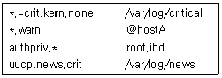
- 인증 관련 로그를 root 및 ihd 사용자의 터미널로 전송한다.
- 모든 메세지 종류에 대해 crit 수준의 메세지만 /var/log/critical 파일에 기록하고 커널 관련 메세지는 제외한다.
- uucp 및 new에서 발생하는 crit 수준 이상의 메세지를 /var/log/news에 기록한다.
- 모든 종류의 메세지 중 warn 수준 이상의 메세지를 hostA 사용자에게 보낸다.
(정답률: 33%)
53. 다음 중 명령어와 상관있는 파일조합으로 틀린 것은?
- last : /var/log/wtmp
- lastlog : /var/log/lastlog
- lastb : /var/log/btmp
- dmesg : /var/log/messages
(정답률: 46%)
54. 다음 중 로그 파일과 설명으로 알맞은 것은?
- /var/log/xferlog : sendmil, dovecot등 메일 관련 작업이 기록
- /var/log/boot.log : 부팅시 동작하는 데몬 관련 정보가 기록
- /var/log/btmp : 접속 성공 기록
- /var/log/wtmp : cron 관련 정보가 기록
(정답률: 50%)
55. 다음 설명에 해당하는 커널 파라미터로 알맞은 것은?
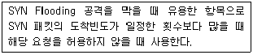
- net.ipv4.ip_local_port_range
- net.ipv4.icmp_echo_ignore_all
- net.ipv4.ip_forward
- net.ipv4.tcp_syncookies
(정답률: 36%)
56. 다음 중 리눅스 보안 정책에 대한 설명으로 틀린 것은?
- 불필요한 서비스를 제거
- root 패스워드 변경 제한
- 보안이 강화된 서비스로 대체 이용
- Set-UID 설정을 추가하여 보안을 강화
(정답률: 47%)
57. 다음 중 SELinux 상태를 비활성화시키는 명령으로 알맞은 것은?
- getenforce 0
- getenforce 1
- setenforce 0
- setenforce 1
(정답률: 53%)
58. 다음 중 백업과 관련된 명령어로 틀린 것은?
- tar
- dump
- cpio
- sysctl
(정답률: 57%)
59. 다음은 두 디렉터리를 동기화하는 과정이다. ( 괄호 ) 안에 들어갈 옵션으로 알맞은 것은?
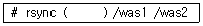
- -av
- -iv
- -ov
- -uv
(정답률: 43%)
60. 다음 중 ( 괄호 ) 안에 들어갈 내용으로 알맞은 것은?
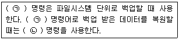
- ㉠ tar ㉡ dd
- ㉠ cpio ㉡ tar
- ㉠ dump ㉡ restore
- ㉠ rsync ㉡ restore
(정답률: 56%)
3과목: 네트워크 및 서비스의 활용
61. 운영 중인 웹 서버의 버전을 확인하려고 한다. 다음 ( 괄호 ) 안에 들어갈 내용으로 알맞은 것은?
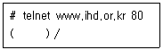
- GET
- POST
- PUT
- HEAD
(정답률: 41%)
62. HTTP 요청에 대한 상태 코드값이 403으로 나타났다. 다음 중 이 값에 대한 설명으로 알맞은 것은?
- Bad Request
- Unauthorized
- Not Found
- Forbidden
(정답률: 53%)
63. 아파치 웹 서버의 개인 홈 디렉터리를 public_html에서 www로 변경하려고 한다. 다음 ( 괄호 ) 안에 들어갈 내용으로 알맞은 것은?
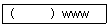
- UserDir
- UserDirectory
- HomeDir
- HomeDirectory
(정답률: 35%)
64. 다음은 아파치 웹 사용자를 처음 생성하는 과정이다. 다음 ( 괄호 ) 안에 들어갈 내용으로 알맞은 것은?
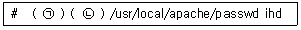
- ㉠ passwd ㉡ -a
- ㉠ passwd ㉡ -c
- ㉠ htpasswd ㉡ -a
- ㉠ htpasswd ㉡ -c
(정답률: 32%)
65. 다음 중 MySQL을 설치한 후 기본 데이터베이스를 생성할 때 사용하는 명령으로 알맞은 것은?
- mysql_install_db
- mysqld_install_db
- mysql_install_safe
- mysqld_install_safe
(정답률: 44%)
66. 다음 중 우리나라의 도(道)에 해당하는 LDAP 속성 키워드로 알맞은 것은?
- c
- l
- st
- street
(정답률: 46%)
67. 다음 중 네트워크 기반으로 사용자 인증 및 홈 디렉터리를 함께 제공하는 조합으로 가장 알맞은 것은?
- NIS, LDAP
- NIS, NFS
- NFS, FTP
- NIS, RPC
(정답률: 32%)
68. 다음 중 NIS 서버 및 클라이언트 구성할 때 사용하는 데몬으로 가장 거리가 먼 것은?
- bind
- rpcbind
- ypbind
- ypserv
(정답률: 40%)
69. NIS 서버의 도메인명을 ihd.or.kr로 설정한 상태이다. 다음 중 NIS 서버 관련 맵 파일이 위치하는 디렉터리로 알맞은 것은?
- /usr/yp/ihd.or.kr
- /usr/ypserv/ihd.or.kr
- /var/yp/ihd.or.kr
- /var/ypserv/ihd.or.kr
(정답률: 35%)
70. 다음 중 NIS 서버에서 사용자 관련 정보를 저장하는 맵 파일로 알맞은 것은?
- user.byname
- passwd.byname
- ypserv.byname
- ypbind.byname
(정답률: 34%)
71. ihd1 및 ihd2 라는 삼바 사용자만 접근가능하도록 설정하려고 한다. 다음 ( 괄호 ) 안에 들어갈 내용으로 알맞은 것은?
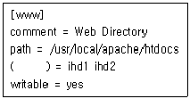
- valid user
- valid users
- valid-user
- valid-users
(정답률: 43%)
72. 다음 중 smb.conf 파일의 설정 오류를 점검할 때 사용하는 명령으로 알맞은 것은?
- smbstatus
- smbpasswd
- testparm
- nmblookup
(정답률: 45%)
73. NFS 서버에서 /data 디렉터리에 대한 접근 권한을 조건과 같이 설정하였다. 다음 중 관련 설명으로 알맞은 것은?
- IP주소가 192.168.5.24인 호스트만 읽기 및 쓰기 권한이 가능하고, root 권한이 인정된다.
- IP주소가 192.168.5.24인 호스트만 읽기 및 쓰기 권한이 가능하지만 root 권한은 인정되지 않는다.
- 192.168.5.0 주소 대역 호스트들은 모두 읽기 및 쓰기가 가능하고 root 권한이 인정된다.
- 192.168.5.0 주소 대역 호스트들은 모두 읽기 및 쓰기가 가능하지만 root 권한은 인정되지 않는다.
(정답률: 43%)
74. NFS 클라이언트에서 NFS 서버에 익스포트된 정보를 확인하려고 한다. 다음 ( 괄호 ) 안에 들어갈 명령으로 알맞은 것은?
- exportfs
- nfsstat
- rpcinfo
- showmount
(정답률: 34%)
75. 다음 중 FTP 서버에서 보편적으로 사용하는 포트 번호 조합으로 가장 알맞은 것은?
- 19, 20
- 20, 21
- 21, 22
- 22, 23
(정답률: 50%)
76. 다음 ( 괄호 ) 안에 들어갈 내용으로 알맞은 것은?
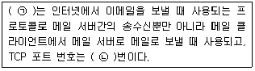
- ㉠ POP3 ㉡ 110
- ㉠ IMAP ㉡ 143
- ㉠ SMTP ㉡ 25
- ㉠ SNMP ㉡ 161
(정답률: 47%)
77. 다음에서 설명하는 메일 관련 프로그램으로 알맞은 것은?
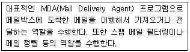
- kmail
- postfix
- evolution
- procmail
(정답률: 38%)
78. 다음 중 /etc/aliases 파일 수정한 후 실행시켜야 하는 명령으로 알맞은 것은?
- m4
- mailq
- newaliases
- makemap hash
(정답률: 42%)
79. 다음 설명과 관련 있는 파일로 알맞은 것은?
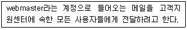
- /etc/aliases
- /etc/mail/access
- /etc/mail/virtusertable
- /etc/mail/local-host-names
(정답률: 35%)
80. 특정 도메인으로부터 전송되는 메일을 거부 메시지없이 무조건 거절하려고 한다. 다음 ( 괄호 ) 안에 들어갈 내용으로 알맞은 것은?
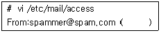
- OK
- RELAY
- REJECT
- DISCARD
(정답률: 46%)
81. 다음 설명에 해당하는 서버로 알맞은 것은?
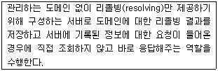
- Primary Name Server
- Secondary Name Server
- Caching Name Server
- Slave Name Server
(정답률: 55%)
82. 다음은 /etc/named.conf 파일의 내용이다. ( 괄호 ) 안에 들어갈 내용으로 알맞은 것은?
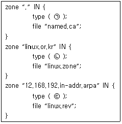
- ㉠ hint ㉡ master ㉢ slave
- ㉠ hint ㉡ master ㉢ master
- ㉠ master ㉡ master ㉢ slave
- ㉠ master ㉡ hint ㉢ hint
(정답률: 36%)
83. 웹호스팅 중인 특정 도메인에 대해 어떠한 호스트명을 입력해도 접근이 가능하도록 존 파일을 설정하려고 한다. 다음 ( 괄호) 안에 들어갈내용으로알맞은 것은?
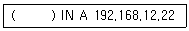
- @
- *
- $
- !
(정답률: 49%)
84. 다음 중 존 파일 또는 리버스 존 파일 설정에 적합한 내용으로 알맞은 것은?
- @ IN SOA ns.linux.or.kr. master@ihd.or.kr.
- www IN PTR linux.or.kr.
- www1 IN CNAME www
- mail IN MX linux.co.kr
(정답률: 30%)
85. 다음 중 named.conf 파일에서 네임 서버에 질의할 수 있는 호스트를 지정할 때 사용하는 항목으로 알맞은 것은?
- allow-query
- allow-hosts
- query-allow
- hosts-allow
(정답률: 38%)
86. 다음 중 하나의 물리적 서버에 다수의 웹 서버를 운영하려고 할 때 가장 효율적인 기술로 알맞은 것은?
- Xen
- KVM
- Docker
- VirtualBox
(정답률: 36%)
87. 다음 중 서버 가상화의 장점에 대한 설명과 가장 거리가 먼 것은?
- 장애 발생 시에 문제 해결이 쉽다.
- 효율적인 서버 자원의 이용이 가능하다.
- 서버가 차지하고있는물리적 공간을 절약할수 있다.
- 데이터 및 서비스에 대한 가용성이 증가한다.
(정답률: 47%)
88. 다음 중 리눅스에 사용가능한 서버 가상화 기술로 틀린 것은?
- Docker
- Hyper-V
- Cloudstack
- Openstack
(정답률: 39%)
89. 가상화 운영을 위해 관련 데몬을 실행시키려고 한다. 다음 ( 괄호 ) 안에 들어갈 내용으로 알맞은 것은?
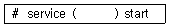
- virt-manager
- virtd
- libvirt
- libvirtd
(정답률: 37%)
90. 다음에서 설명하는 내용으로 알맞은 것은?
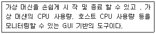
- virsh
- virt-manager
- virt-top
- xm
(정답률: 41%)
91. 다음 ( 괄호 ) 안에 들어갈 내용으로 알맞은 것은?
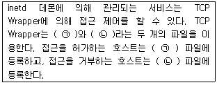
- ㉠ /etc/host.allow ㉡ /etc/host.deny
- ㉠ /etc/hosts.allow ㉡ /etc/hosts.deny
- ㉠ /etc/allow.host ㉡ /etc/deny.host
- ㉠ /etc/allow.hosts ㉡ /etc/deny.hosts
(정답률: 46%)
92. 텔넷 서비스를 활성화시키려고 한다. 다음 ( 괄호 ) 안에 들어갈 내용으로 알맞은 것은?
- on
- off
- yes
- no
(정답률: 45%)
93. 다음 설명과 관련 있는 서버로 알맞은 것은?
- VNC
- NTP
- DHCP
- PROXY
(정답률: 53%)
94. 다음은 dhcpd.conf 파일의 일부로 특정 호스트에 고정적인 IP 주소를 할당해주는 부분이다. ( 괄호 ) 안에 들어갈 내용으로 알맞은 것은?
- ip-address
- static-address
- fixed-address
- dhcp-address
(정답률: 48%)
95. 다음 중 VNC 서버의 패스워드를 설정하는 명령으로 알맞은 것은?
- vncserver
- vncpasswd
- Xvnc
- vncconfig
(정답률: 52%)
96. 다음에서 설명하는 DoS 공격으로 알맞은 것은?
- Smurf Attack
- Land Attack
- Mail Bomb
- Teardrop Attack
(정답률: 44%)
97. 다음 예제와 관련 있는 DoS 공격 유형으로 알맞은 것은?
- 디스크 자원 고갈
- 메모리 자원 고갈
- 프로세스 자원 고갈
- SSH 무작위 대입 공격
(정답률: 50%)
98. iptables를 이용하여 웹사이트를 차단하려 한다. 다음 중 ( 괄호 ) 안에 들어갈 내용으로 알맞은 것은?
- ㉠ : -d ㉡ : -p ㉢ : -o
- ㉠ : -o ㉡ : -p ㉢ : -d
- ㉠ : -d ㉡ : --dport ㉢ : -o
- ㉠ : -o ㉡ : --dport ㉢ : -d
(정답률: 36%)
99. 다음에서 설명하는 방화벽으로 알맞은 것은?
- 배스천 호스트
- 이중 홈 게이트웨이
- 스크린 호스트 게이트웨이
- 스크린 서브넷 게이트웨이
(정답률: 37%)
100. 다음 중 DDoS 공격에 대한 대응책으로 틀린 것은?
- 침입 차단 시스템을 이용하여 패킷 및 포트 필터링
- 침입 탐지 시스템을 이용한 공격 탐지
- 로드 밸런싱을 통한 대용량 트래픽 분산 처리
- 서비스별 대역폭을 무제한으로 설정
(정답률: 57%)